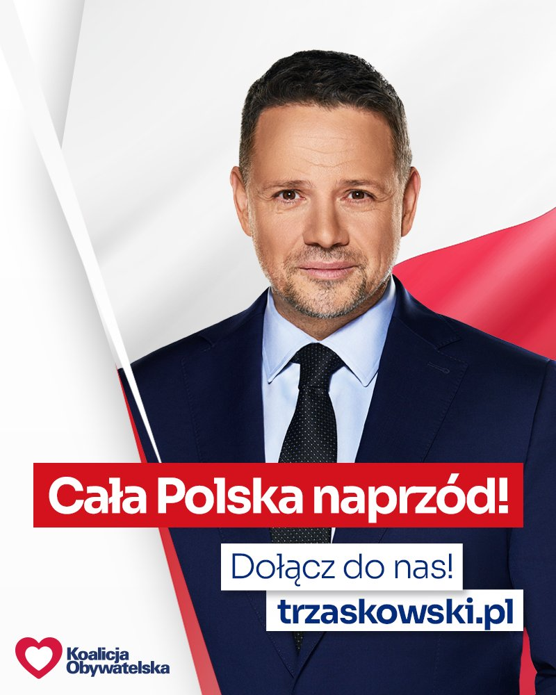
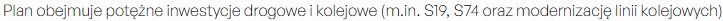
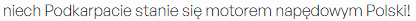

Do analizy wybrałem program wyborczy Prezydenta Warszawy-Rafała Trzaskowskiego.
Punkty na które zwróciłem największą uwagę to:
Bezpieczeństwo kraju
Gospodarka i rozwój przemysłu kraju
Wspieranie obywateli
Często używa takich haseł jak "#CałaPolskaNaprzód" co mówi aby stworzyć nową,lepszą Polske, albo "Nowa Solidarność" która odnosi do nowo stworzonego przez niego stowarzyszenia.

Rafał Trzaskowski na debacie prezydenckiej:
Bezpieczeństwo kraju
Kandydat na prezydenta proponuje "Pakt dla bezpieczeństwa" który ma zapewnić większe wydatki na wojsko oraz przywracanie byłych weteranów służb w celu szkolenia nowych funkcjonariuszy/wojskowych w Polsce.
Również bezpieczeństwo kraju nie może zostać wykorzystane w sporach politycznych
Rada Bezpieczeństwa z udziałem prezydenta ma się odbywać co najmniej raz na 60 dni
Aspektem który też chce rozwinać jest przemysł zbrojeniwoy i technologiczny
Poniżej znajduje się filmik przedstawiający Rafała Trzaskowskiego o bezpieczeństwie kraju
Gospodarka i rozwój przemysłu Kraju
Prezydent chce zainwestować i rozwinać Podkarpacie budując nowego budynki,drogi i połączenia kolejowe również chce zmodernizować szkoły,szpitale i inne potrzebne dla wszystkich placówki

Plan ma na celu nie tylko rozwinąć Podkarpacia ale wraz z nim cały kraj,tak jak Trzaskowski mówi "niech Podkarpacie stanie się motorem napędowym Polski!".

Nie chce tylko rozwinąć Podkarpacia lecz również cały kraj, wspierając i promując firmy i przedsiębiorców
Poniżej znajduje się filmik przedstawiający Rafała Trzaskowskiego o gospodarce i przemyśle
Wspieranie obywateli
Ma przeznaczyć 2 miliardy zł rocznie dla potrzebujących miast i reginów w Polsce.
Chce zmodernizować infrastrukturę społeczną i transportową oraz stworzyć nowe miejsca pracy
Decyzjie na co ma zostać wykorzystany budżet moją być podejmowane z mieszkańcami oraz konsultować się z nimi
Analiza programu
Czy postulaty są połączone i realistyczne?
Program łączy bezpieczeństwo, przemysł zbrojeniowy z inwestycjami społecznymi i konsultacjami. Skupienie się na konkretnym regionie czyli Podkarpacie z myślą o rozwoju całego kraju jest spójną strategią rozwoju regionalnego. Realność zależy od skali środków (2 mld zł rocznie oraz zwiększone wydatki na wojsko), ale liczby są konkretne.
Do kogo jest kierowana kampania?
Materiał celuje w dwie grupy społeczne: personel wojskowy, weteranów i osoby dbające o bezpieczeństwo przez pakt dla bezpieczeństwa oraz mieszkańców regionów słabiej rozwiniętych lub potrzebujących inwestycji, ze szczególnym naciskiem na mieszkańców Podkarpacia.
Jakie są główne przesłania kampanii?
Głównym przekazem jest stabilizacja i rozwój. Kandydat stawia się jako ten, który zapewni bezpieczeństwo oraz przyspieszy rozwój gospodarczy poprzez inwestycje w przemysł i infrastrukturę.
Jakie środki przekazu są wykorzystywane?
Najczęściej wykorzystywanymi środkami są plakaty oraz bilbordy z prezydentem , wizualizacje inwestycji poprzez zdjęcia oraz filmy z wypowiedziami kandydata, które mają na celu wzmocnienie przekazu i pokazanie zaangażowania.
Podsumowanie
Wnioski z analizy:
Zaprezentowany fragment programu Rafała Trzaskowskiego przedstawia go jako kandydata prezydenckiego.
Strategia regionalna
Wyraźne wskazanie na Podkarpacie jako "motor napędowy" świadczy o próbie przełamywania barier elektoratowych i głosowania na konkretne, lokalne potrzeby takie jak drogi i szpitale, a nie tylko ogólnikowe hasła.
Bezpieczeństwo jako priorytet
Propozycja regularnych spotkań Rady Bezpieczeństwa i włączenia weteranów do szkoleń buduje wizerunek prezydenta, który jest aktywnym dowodzącym i dba o ciągłość kadr wojskowych.
Partycypacja
Postulat konsultowania budżetu z mieszkańcami (w ramach 2 mld zł) jest elementem demokratyzacji lokalnej, mającym zwiększyć zaangażowanie obywateli w życie publiczne.
Podsumowując
Analiza tego materiału pokazuje kandydata, który łączy sprawy obronności z aktywną polityką gospodarczą i społeczną, dążąc do wyrównania szans rozwojowych różnych regionów Polski.